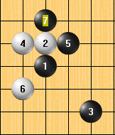

求教高手这个游星,白如何必胜?谢谢!
首页
五子棋交流
#1 求教高手这个游星,白如何必胜?谢谢! 作者：wuxiao 发表时间：2008-4-1 22:05:58
如题,有终结谱吗?
#2 Re:求教高手这个游星,白如何必胜?谢谢! 作者：百医天使 发表时间：2008-4-2 0:12:18
这个五不是必败吧
#3 Re:求教高手这个游星,白如何必胜?谢谢! 作者：walker 发表时间：2008-4-2 0:42:51
把其它的黑5都杀了不就行了。